今日趋势
语音能力的扩展，本期落在可点名的接口上。llama.cpp接入既有ZONOS3 Mini的生成路径，同日另一构建加入Higgs与VibeVoice的识别路径；Inference Gateway桌面版则把口型模型选择和数字人测试放到界面里。前两项属于运行适配，后一项属于客户端功能，都不能据此宣布一个新的基础模型诞生，也没有一套共同评测证明整条链路已经流畅。
另有两组进展值得单独看。社区转换降低了下载和部署门槛，却沿用原模型的质量问题，3DCoder作者公开的失败比例尤其醒目。科学与商业报道则需要分清“今天发表”和“今天发生”：格点构造的预印本较早，具身智能融资来自前期统计，数据中心股票与上市安排是当天新分析。日期标注准确，读者才能判断哪些信息改变了今天的认识。
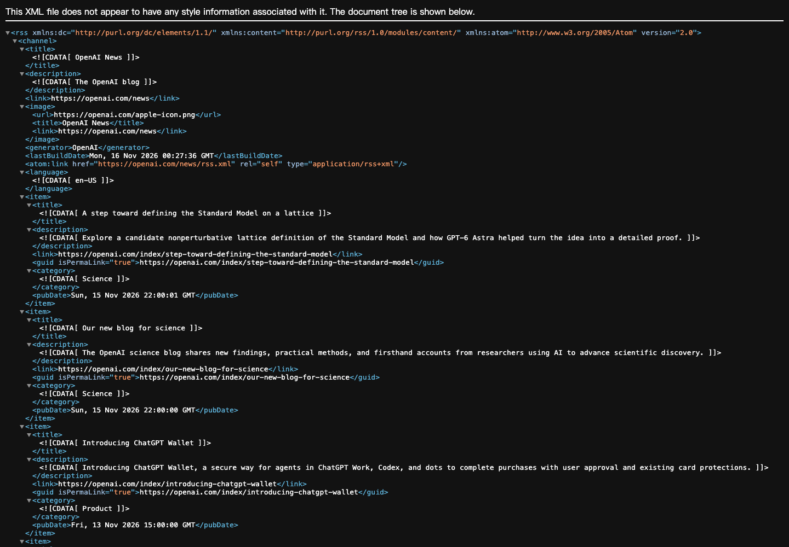
OpenAI官方发布订阅，含本期科学博客条目
OpenAI上线科学博客，公开研究过程
来源: OpenAI · 2026-11-16 · 原文链接
OpenAI开设新的科学博客，内容分为研究与发现、可复用的实践方法，以及研究者的一手经验。官方将科学计算、数据分析、文献研究和实验规划列为方法分享的方向，也强调检查结果与说明限制。首批内容包括物理学家Nathaniel Craig对候选格点构造的回顾。这次发布增加了公开研究过程的渠道，没有同时宣布新的基础模型或一项当天完成的科学证明。
Janet 锐评：
研究记录如果只保留成功案例，读者仍难以复用方法。这个栏目后续能否持续交代无效尝试、检查步骤和适用条件，会比首日列出多少学科更有参考价值。
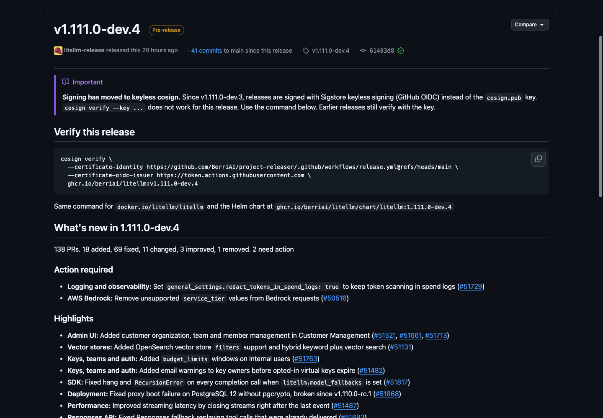
LiteLLM / GitHub
LiteLLM开发版改用无密钥签名
来源: LiteLLM / GitHub · 2026-11-16 · 原文链接
LiteLLM发布1.111.0-dev.4开发版，说明强调自dev.3起采用基于GitHub身份的Sigstore无密钥签名，原来的公钥校验方式不适用于这批新产物，较早版本仍沿用旧方案。说明将dev.3标记为发布不完整，并指向同一提交的dev.4修正版本。此外，团队可显式开启消费日志中的令牌脱敏；不受支持的Bedrock服务等级参数需要移除。这些迁移事项针对开发发行，不能直接视作稳定生产版升级建议。
Janet 锐评：
下载成功之后还有验证来源这一步。签名机制更换意味着已有校验脚本也要同步调整。开发版列出的日志开关与参数变化，适合先在测试环境逐项确认。
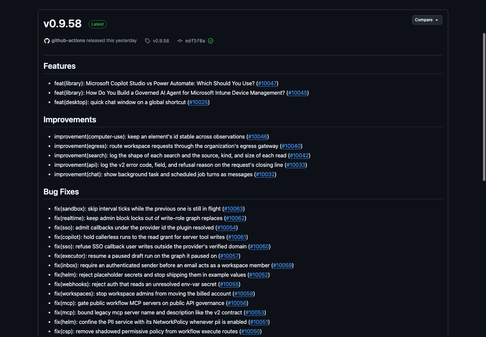
Sim / GitHub
Sim给桌面聊天加全局快捷键
来源: Sim / GitHub · 2026-11-16 · 原文链接
Sim发布0.9.58，为桌面聊天窗口加入全局快捷键，并在后台和定时任务的消息中显示执行轮次。版本同时处理工作流运行与身份边界：暂停的任务恢复时沿用原始图结构，入站邮件在代表工作区成员执行操作前需要验证发件人，无法解析环境变量中的密钥时拒绝相应Webhook认证。它们是同一版本中的功能和修正，不能据此断言所有部署场景都已完成安全审计。
Janet 锐评：
快捷键缩短了唤起助手的路，邮件身份与恢复现场则决定这条路会不会走错。对长期运行的工作流，能确认是谁触发、从哪张图继续，往往比多一个入口更关键。
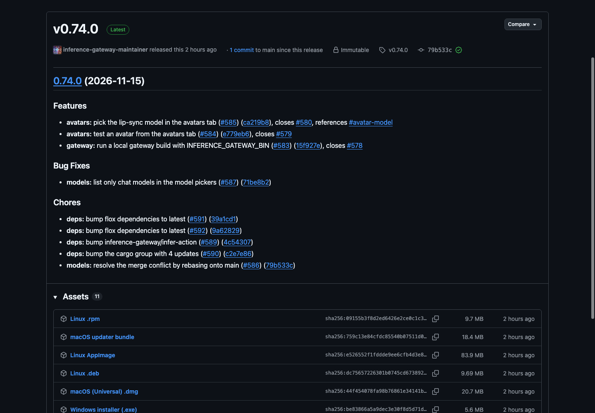
Inference Gateway / GitHub
网关桌面版支持选择口型模型
来源: Inference Gateway / GitHub · 2026-11-16 · 原文链接
Inference Gateway Desktop发布0.74.0，在数字人页面加入选择口型同步模型和直接测试数字人的功能；开发者也可以通过INFERENCE_GATEWAY_BIN指定本地构建的网关程序。模型选择器另作修正，只列出聊天模型。这次变化发生在桌面客户端与网关的连接层，没有公布新的语音或数字人基础权重，也没有给出跨设备的延迟和口型一致性评测。
Janet 锐评：
模型能出现在菜单里，距离自然对话仍有声音、口型和等待时间几道关。内置测试入口有用，前提是允许用户尽早看见组合后的实际效果和失败位置。
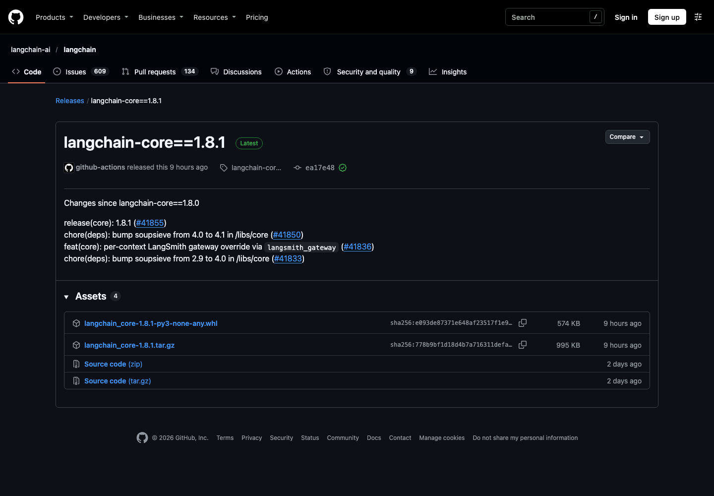
LangChain / GitHub
LangChain接入四类模型的网关路由
来源: LangChain / GitHub · 2026-11-16 · 原文链接
LangChain核心1.8.1加入按上下文覆盖LangSmith网关配置的能力。同一窗口内，DeepSeek 1.2.0、xAI 1.4.0、Groq 1.2.0和MistralAI 1.2.0四个集成包分别接入网关路由；MistralAI包还修正推理模型的流式处理。相关集成包停止支持已结束维护的Python 3.10，升级前需要核对运行环境。这是一组协同的接入更新，不是四家上游同时发布新模型。
Janet 锐评：
统一路由方便团队集中管理调用，但兼容性仍落在各个集成包上。环境版本与流式行为一起变动时，只检查请求能否发出去还不够，返回过程也得跑完。
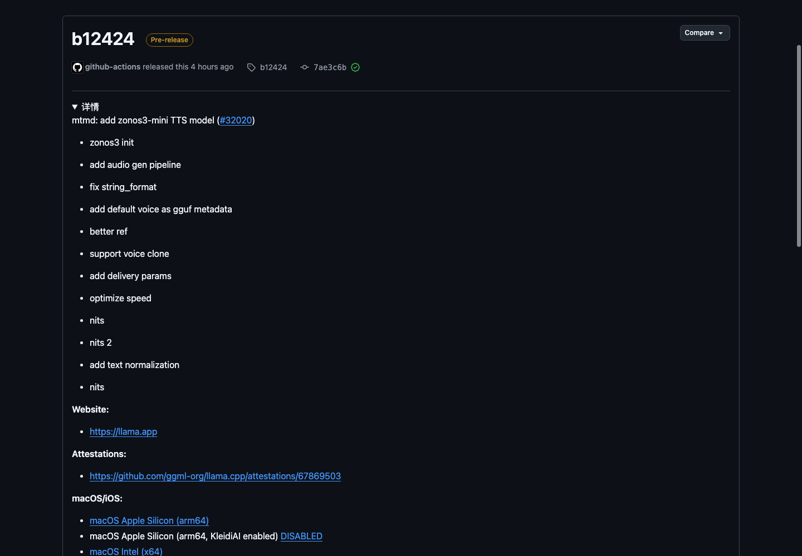
llama.cpp / GitHub
llama.cpp加入ZONOS语音生成适配
来源: llama.cpp / GitHub · 2026-11-16 · 原文链接
llama.cpp的b12424预发布构建加入既有ZONOS3 Mini的运行适配。这个混合架构模型约8亿总参数、每次约1亿活跃参数，使用10组音频码本，输出44.1千赫音频。原版自带的运行格式不能直接用于llama.cpp，新路径需要专用转换及主GGUF、音频模块两类文件。文档还说明，数字、日期和缩写的文本规范化尚未完全对齐上游实现，部分输入需要预先整理。这是运行支持的新增，并非Zyphra今天发布新的基础模型。
Janet 锐评：
音色接上了，读法未必随之接上。日期、缩写与数字恰好是新闻播报里最容易出错的部分；部署这条适配路径时，应拿实际稿件试听，而不能只凭一句演示判断完整朗读质量。
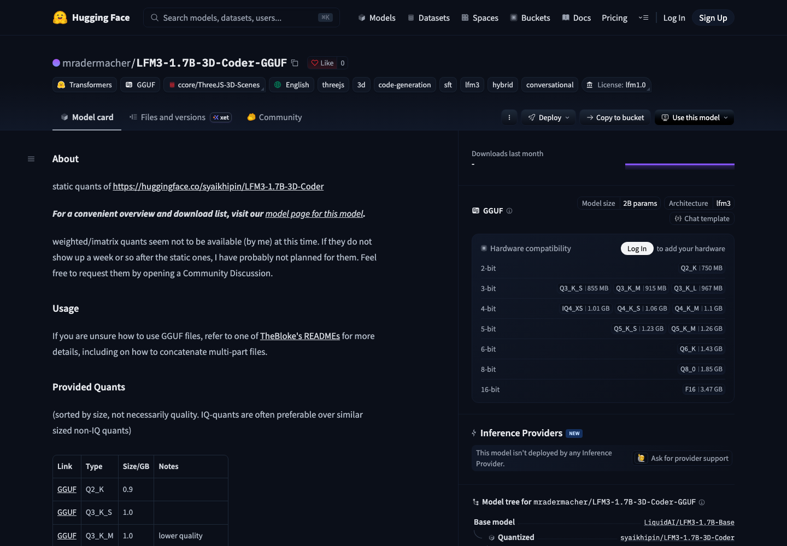
mradermacher / syaikhipin · Hugging Face
3DCoder新增转换，原模型语法仅过3题
来源: mradermacher / syaikhipin · Hugging Face · 2026-11-16 · 原文链接
社区新增LFM3-1.7B-3D-Coder的GGUF转换，Q4_K_M文件约1.2GB，这是存储体积，不等同于运行内存。基础模型是独立作者对LiquidAI模型的完整微调，目标为一次生成Three.js网页场景，采用LFM定制许可。原作者在60条分层验证提示上自报：16条生成完整HTML，但只有3条通过JavaScript语法检查，语法通过率为5%；这一结果针对原模型精度，转换版没有另行复测。新文件降低了尝试门槛，没有证据表明量化解决了原有循环和代码错误。
Janet 锐评：
作者把失败数字写进模型卡，反而使这份模型有了明确用途：它适合研究格式学习为什么没有转化成可执行代码。完整HTML与有效JavaScript之间差了13个样本，场景能否渲染还要继续验证。对需要直接交付网页的人，下载更小只是成本变化；语法和运行结果仍会把节省的等待时间重新花掉。
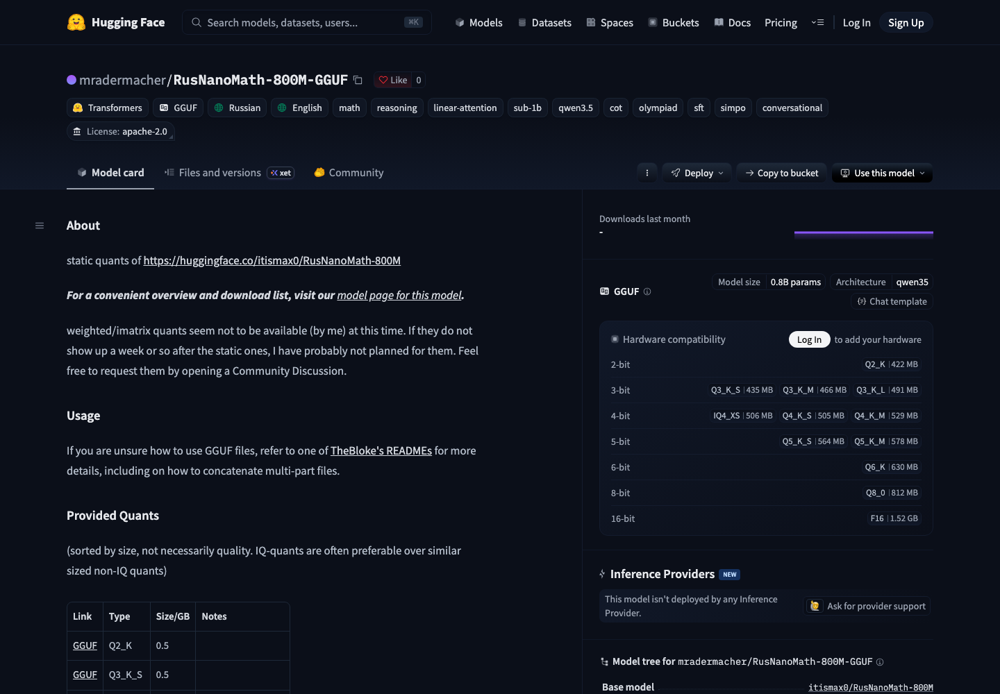
mradermacher / itismax0 · Hugging Face
俄英语数学小模型上线GGUF转换
来源: mradermacher / itismax0 · Hugging Face · 2026-11-16 · 原文链接
RusNanoMath-800M新增社区GGUF转换，Q4_K_M文件约0.6GB。原模型是独立开发的俄语、英语数学推理微调，约8亿参数，基于Qwen3.5混合线性注意力架构，模型卡标注Apache 2.0许可。作者对原精度权重自报MATH500答对181题，即36.2%；这不是转换后GGUF的实测成绩，也不能代表中文数学或生产任务的表现。本次窗口内的新事件是转换文件发布，原模型训练发生在此前。
Janet 锐评：
小体积给本地实验留出了余地，语言覆盖则决定实验能回答什么。若实际题目以中文为主，俄英语测试里的36.2%还不足以替代一组中文样题验证。
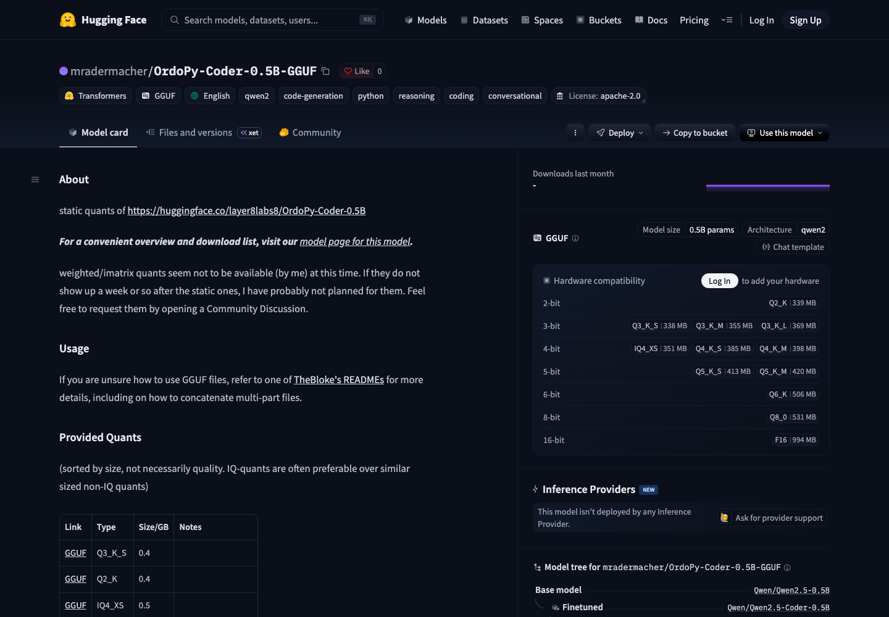
mradermacher / layer8labs8 · Hugging Face
OrdoPy半十亿代码模型开放转换
来源: mradermacher / layer8labs8 · Hugging Face · 2026-11-16 · 原文链接
社区为OrdoPy-Coder-0.5B发布GGUF转换，Q4_K_M文件约0.5GB。原模型由独立团队在Qwen2.5-Coder-0.5B-Instruct上微调，面向英语Python任务，模型卡标注Apache 2.0许可。作者在贪心解码、隔离进程与每题3秒限制的自有测试中，报告HumanEval通过67题，共164题，即40.85%。这个数字属于原精度模型的作者自报，不能挪作量化版复测结果，也不能和不同测试协议的成绩直接混排。
Janet 锐评：
半GB文件便于把试验放到普通机器上，但代码是否可靠仍取决于任务分布和执行检查。保留测试协议，比只摘一个百分比更能帮助使用者判断是否值得试。
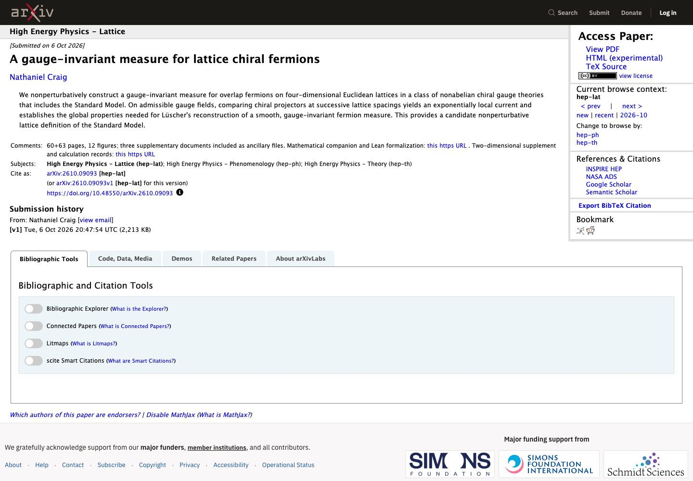
本文讨论的10月预印本页面
物理学家用新文章解释格点候选构造
来源: Nathaniel Craig / OpenAI · 2026-11-16 · 原文链接
物理学家Nathaniel Craig在OpenAI科学博客发表一手回顾，讲述与GPT-6 Astra讨论标准模型有限格距候选定义的过程；相关预印本早在10月公开，今天的新内容是研究过程说明。文章描述逐步细化格点并比较允许的费米子状态，以建立相位规定，模型参与了收敛论证的探索。构造仍依赖格点尺度的场强界限，有限格距的反射正性问题尚未解决，实际数值模拟也有大量工作。作者提及外部专家讨论，不能把它等同于已完成同行评审或标准模型所有定义问题均已解决。
Janet 锐评：
公开推理过程的价值，在于其他研究者能沿着假设继续问下去。场强界限和反射正性这些限制，正是判断候选构造走了多远的坐标；若报道只留下“模型帮助完成证明”，读者反而失去了最重要的信息。后续应看专家能否复核关键步骤、限制能否放宽，以及构造是否带来可计算的结果，这些都需要时间。
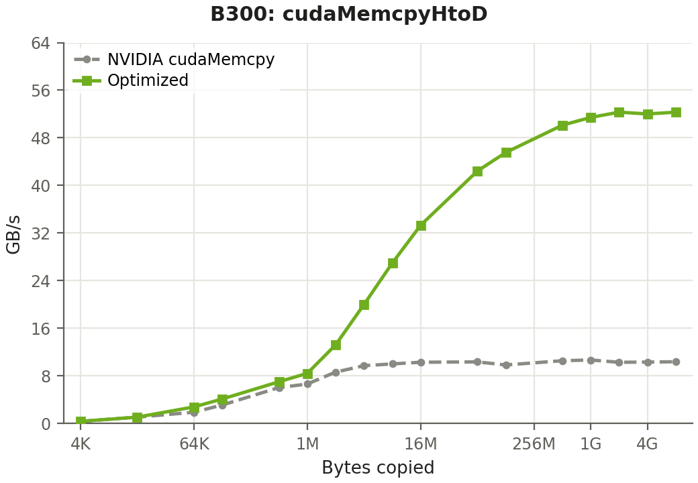
maknee / 技术博客与 GitHub
CUDA调优工具上线，自报五倍带宽
来源: maknee / 技术博客与 GitHub · 2026-11-16 · 原文链接
开发者maknee发布cudamemcpy-tuner及技术说明，通过命令包装拦截并调优可分页CPU内存与GPU之间的数据传输，使用多线程和暂存缓冲区，不要求修改被包装应用的代码。作者在B300上对1GB复制的微基准自报约52GB/s，默认路径约10GB/s，固定页内存路径约56GB/s，并提供RTX 3090测试。这里的约五倍指特定传输测试的带宽，不能写成整个模型快五倍；实际收益取决于硬件、内存和工作负载是否受传输限制。
Janet 锐评：
带宽数字先回答哪一段变快，应用测试才能回答人少等多久。CPU卸载的专家模型可能频繁搬运权重，另一些任务则主要卡在计算，二者不会自动得到同一收益。这个工具值得关注的地方，是把原来隐藏在运行中的复制路径拿出来测；部署者仍需检查暂存内存开销、原任务输出和完整耗时，才能判断这次优化是否划算。
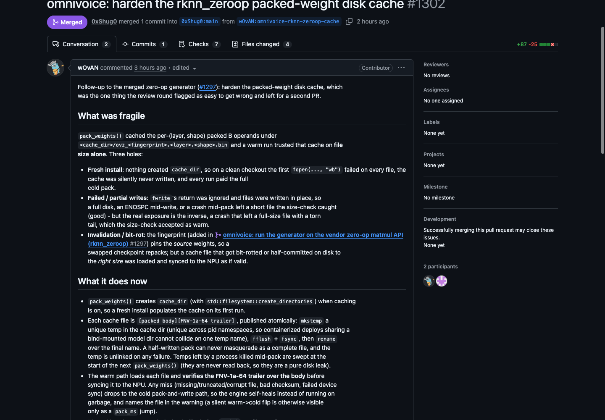
audio.cpp / GitHub
audio.cpp给权重缓存加完整性检查
来源: audio.cpp / GitHub · 2026-11-16 · 原文链接
audio.cpp主线合并OmniVoice在Rockchip RKNN路径上的权重缓存修正：启用缓存时创建目录，写入时使用临时文件和原子替换，并在缓存尾部记录校验值。读取发现缺失或损坏会重新打包，目录只读等写入错误保留警告而不终止会话。旧缓存会因格式变化失效。这是窗口内的主线代码变化，尚不能写成新的稳定发行；所用FNV校验用于发现意外损坏，也不是抵御恶意篡改的密码学保证。
Janet 锐评：
热启动快不快，首先得确认复用的文件完整。损坏后退回重新打包，给这条嵌入式语音路径留了一条恢复通道；代价是那次启动会重新支付准备时间。
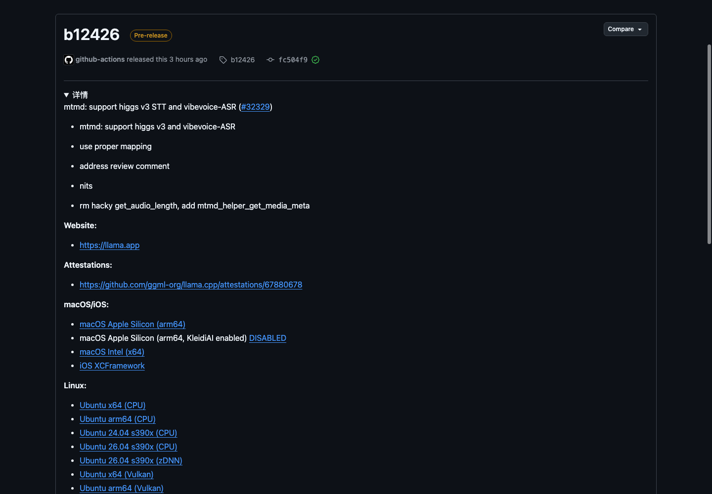
llama.cpp / GitHub
llama.cpp再接入两条语音识别路径
来源: llama.cpp / GitHub · 2026-11-16 · 原文链接
前文语音生成适配之外，llama.cpp同日b12426构建加入Higgs Audio v3 STT与微软VibeVoice-ASR-HF的运行支持，两者共享部分骨干实现。此次新增的是已有模型的语音转文字适配，不是两家当天发布新基础权重。发行说明没有提供统一的字错率或延迟对比，暂不能据此判断哪种语言更准、是否适合实时转写。
Janet 锐评：
识别负责把声音变成文字，生成负责把文字读出来。两条路径放进同一运行项目，便于继续试验；各自的准确率、读音和等待时间仍需分别检查。
投资与商业
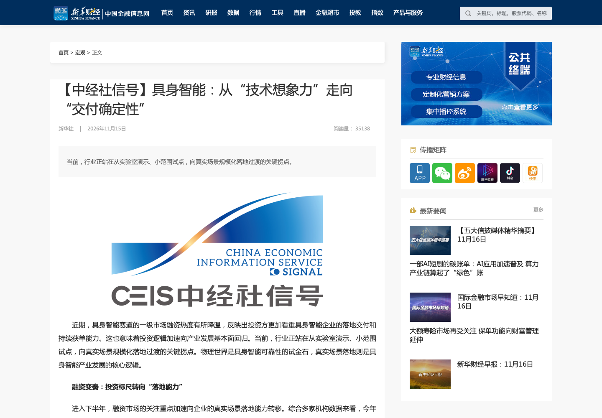
新华社中国经济信息社 / 中国金融信息网
具身智能新分析把重点转向交付
来源: 新华社中国经济信息社 / 中国金融信息网 · 2026-11-16 · 原文链接
新华社中国经济信息社当天发表具身智能行业分析，将关注点从技术想象转向交付确定性。报道综合多家机构数据称，上半年相关融资约1000亿元，6月超过300亿元，10月约101亿元；它们是前期统计，不是今天新增的一笔融资，也未给出足以直接比较各月的统一统计口径。受访观点关注重复订单、回款和可复制的部署，文章同时指出非结构化环境泛化、核心零件成本和后续运维仍是障碍。半结构化场景的定制试点，不能直接等同于通用机器人已实现规模盈利。
Janet 锐评：
交付数字只有和后续使用放在一起，才会显出商业分量。设备进场、客户验收、重复采购与现金回收是不同节点，融资总额也不能替其中任何一个作证。对这类行业分析，更值得追问的是同一套产品能否在第二家客户处少做定制、故障由谁处理、服务费用能否覆盖长期维护；这些问题会决定订单是否能持续。
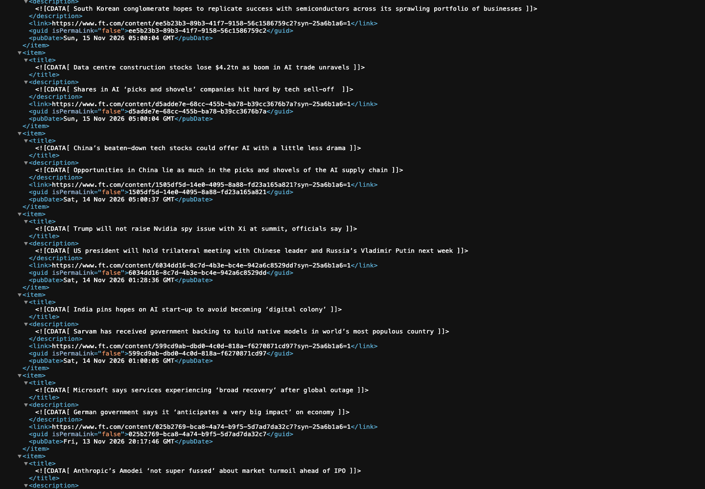
Financial Times官方科技订阅中的当日标题和摘要
FT新分析称建设股缩水4.2万亿美元
来源: Financial Times / 当日公开摘要 · 2026-11-16 · 原文链接
《金融时报》当天新刊市场分析，以4.2万亿美元概括数据中心建设相关股票的市值损失，公开摘要称AI“卖铲人”类公司受到科技股抛售冲击。可公开核对的标题与摘要没有列出完整统计样本和计算区间，因此这里不补写成分股跌幅，也不把它换算成单日表现。这是此前股权估值变化的当日分析，不意味着今天流出同额现金，更不代表数据中心实物资产消失了同样价值。
Janet 锐评：
股价先反映投资者对未来回报的重估，经营数据随后才能说明需求是否真的改变。用市值缩水直接推断机房停建或算力价格下跌，都会跨过报道目前没有提供的证据。
Kevin Lamarque / Reuters，经Semafor原报道配图
上市新分析聚焦认购与算力资金关系
来源: Semafor · 2026-11-16 · 原文链接
Semafor当天新分析将计划11月17日公布的英伟达财报，与计划19日进行的Anthropic上市放在一起观察，并称后者认购约为可售份额的六倍。文章援引较早报道，提到预计在上市后获得英伟达100亿美元投资的安排；这里的新事件是分析发表，投资与上市均不能写成当天已经完成。报道关注AI交易中的市场预期及资金联系，认购倍数也不等同于未来交易价格或最终募资结果。
Janet 锐评：
算力供应方同时可能成为客户的投资者，资金关系会影响外界怎样理解需求。等上市和财报实际发生后，再核对融资到账、支出承诺与收入，才能看清预期兑现了多少。